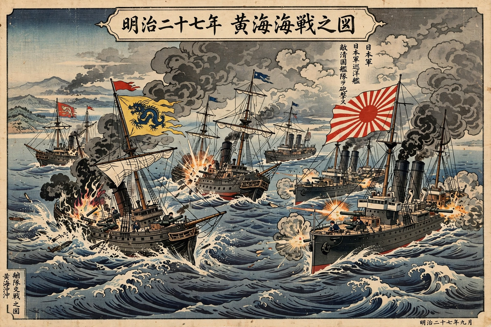

First Sino-Japanese War
| Date | 25 July 1894 – 17 April 1895 |
|---|---|
| Location | Korea, Manchuria, Taiwan, Yellow Sea |
| Belligerents | Empire of Japan; Qing dynasty (China) |
| Result | Japanese victory; Treaty of Shimonoseki |

The First Sino-Japanese War (1894–1895), also known in China as the War of Jiawu, was fought between the Qing dynasty of China and the Empire of Japan, primarily over influence in Korea. Japan's modernized army and navy defeated China's forces in a series of battles on the Korean peninsula, in Manchuria, and at sea, demonstrating the success of the Meiji reforms and shifting the balance of power in East Asia from China to Japan.
Background
Korea, a Qing tributary state, was opened to Japanese trade by the Treaty of Ganghwa in 1876. Rivalry between pro-Chinese and pro-Japanese factions in Seoul repeatedly drew in both powers. In 1894 the Donghak Rebellion led both China and Japan to send troops to Korea; when the rebellion was suppressed, Japan refused to withdraw and seized the Korean royal palace, prompting China to declare war on 1 August 1894, after fighting had already begun at sea off Asan.
Course of the war
Japanese forces won the Battle of Pyongyang in September 1894 and destroyed much of the Beiyang fleet at the Battle of the Yalu River the same month. Japanese armies crossed into Manchuria, captured Port Arthur (Lüshunkou) in November — where troops massacred large numbers of Chinese civilians — and in February 1895 destroyed the remnants of the Beiyang fleet at Weihaiwei. A separate expedition occupied the Pescadores Islands in March 1895.
Treaty of Shimonoseki
Under the Treaty of Shimonoseki (April 1895), China recognized Korean independence, ceded Taiwan, the Pescadores, and the Liaodong Peninsula to Japan, paid an indemnity of 200 million taels, and opened further treaty ports. The Triple Intervention of Russia, Germany, and France then forced Japan to return Liaodong in exchange for an additional indemnity — a humiliation that fuelled Japanese determination to build forces capable of confronting Russia, leading toward the Russo-Japanese War a decade later. Japan's expeditionary armies drew heavily on officers and men from the former Satsuma and Chōshū domains.